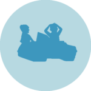
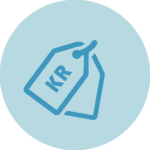

Nej det er altid først til mølle, og de kan ikke forhåndsreserveres.
Vandcykler
Priser
Åbningstider
Find vej

Tag afsted på egen hånd
Odense Aafart tilbyder også leje af vandcykler. I har mulighed for at sejle rundt og nyde roen på åen og den smukke natur, mens I har et par hyggelige og afslappende timer i selskab med familien, kæresten eller vennerne.
Leje hos Odense Aafart vandcykler følger kioskens åbningstider. Man skal senest have påbegyndt sin tur én time før kiosken lukker.
Vandcyklerne kan ikke reserveres på forhånd.

Priser
Lej en vandcykel for kun 125 DKK pr. time
Sejler I længere end 1 time, betaler I for den ekstra tid, når I afhenter jeres legitimation i kiosken efter turen.
Der afregner pr. påbegyndte 15 minutter.
Praktisk info
For at leje en vandcykel skal du aflevere gyldig legitimation (kørekort eller pas - under 18: sygesikring ok)
Du betaler for den første times leje med det samme
Der må max være fire voksne og ét lille barn (max 3 år), eller max 300 kg, i en vandcykel. Man kan ikke sejle 5 personer, selvom man vejler under 300 kg.
Sejler i længere end 1 time, betales for den ektra tid, når legitimation afhentes efter turen. Der afregnes pr. påbegyndte 15 minutter.
Det er en god idé at overstå toiletbesøg og køb af evt. drikkelse, inden i lejer vandcyklerne, da tiden begynder så snart i har betalt.
Vi har ingen redningsveste.
Reglement
Eget ansvar
Unge under 13 år, sejler med mindst en over 18 år.
Vis hensyn til andre, som sejler på åen.
Ingen højtalere.
Ingen opbevaring - tasker og lign. skal medbringes på vandcyklen.
Aflever vandcyklen ved kiosken.
Der lejes ikke vandcykler til synligt berusede personer.
Ingen medbringelse af store mængder alkohol.
Kan ikke reserveres på forhånd.
FAQ - Vandcykler
Her finder du svar på de mest oftestillede spørgsmål. Skulle du stadig have et spørgsmål, så er du altid velkommen til at kontakte os.
For at leje en vandcykel skal du aflevere gyldig legition (kørekort eller pas - hvis du er under 18, er sygesikring ok) i kiosken samtidig med, at du betaler for den første times leje. Det er et krav til udlejningen at gyldig legitimation forelægges.
Er der én eller flere under 13 år i båden, skal der være mindst én person over 18 år i båden også.
Ja, hvis man mener, at den vil være tryg ved at sejle i vandcykel.
I betaler altid for den første time. I må gerne sejle længere tid end en time, så længe I er tilbage inden kiosken lukker. Forhør jer altid om vores åbningstider inden i sejler ud. Hvis i sejler i længere tid end 1 time afregnes pr. påbegyndte 15 minutter.
Nej.
Ja det må I gerne. Sørg for at tage jeres affald med inden I forlader vandcyklen.
Ja det må I gerne, således I ikke smider cigaretskoder i åen eller i vandcyklen.
Der må ikke medbringes højtalere i vandcyklerne, da der ikke må spilles musik ombord. Har I medbragt højtaler vil denne opvares i kiosken mens I sejler.
Vi har desværre ikke mulighed for at opbevare barnevogne eller klapvogne mens i sejler.
Vi har desværre ikke mulighed for at opbevare tasker elle anden bagage mens I sejler i vandcykel. Disse skal medbringes ombord.
Vandcyklerne er fritaget for brug for redningsveste, så ønskes der redningsveste skal disse selv medbringes.
Der er et p-hus lige overfor Aafarten, se evt. kort over området her.